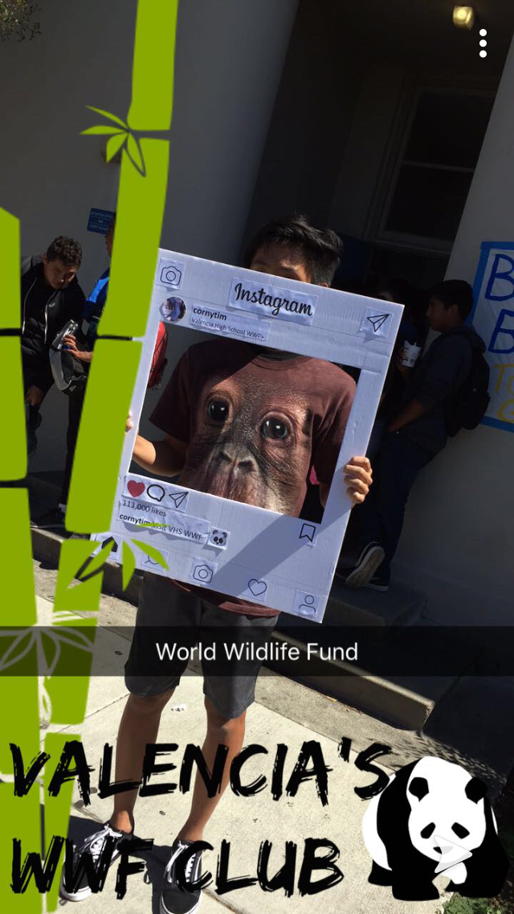
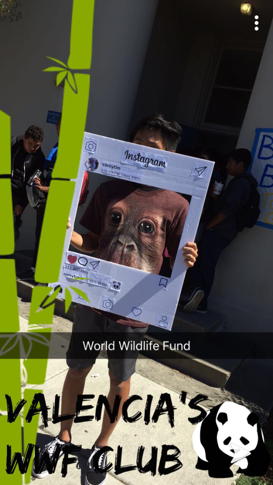

Jarod Jo
Client Serving Contractor
Over the course of high school and further into college, I had multiple job experiences and encountered a plethora of career opportunities guiding my future. Each of these career opportunities shaped my interests and allowed me exposure to the working world. I credit each of these experiences as major milestones that have led me to the position I hold today. With each occupation, I garner useful insights that provide me a greater understanding and intellect pivotal in the future.
My first job was a technical assistant at an insurance firm during my junior year of high school. I specialized in helping insurance agents process forms, utilize the correct tools, and simplified client relations. Often, my job included calling medical groups to gather information regarding transactions necessary to properly handle medical insurance. Furthermore, I assisted many insurance agents in technical usage of computers due to the often-confusing way systems were regularly updated. Throughout my experience, I learned many technical and social skills key in gathering information and providing adequate services to incoming customers. I quickly mastered the necessary tools and systems in which my job operated around, and received a surplus of knowledge that advanced my understanding of insurance, social relations, and business. This insight I gained proved to be useful in my career in my next opportunity.
During the junior and senior year of high school, I co-founded a club named VHSWWF which was my school club for the nationally known organization for the World Wildlife Fund. Due to an extensive knowledge of environmental safety and activism from my class AP Environmental Science, I felt passionate about creating a club on campus that highlighted the impact of humans on the Earth. I utilized both my passion for the safety of the Earth and the skills in which I learned from my previous summer job in order to create and run a successful club of approximately 30 people. We organized club meetings, awareness efforts, and fundraising events in an effort to raise money for the national World Wildlife Fund.
The abilities I accumulated through my experiences combined with my growing interest in business led me to my next and current job at Ernst and Young. I started at the Irvine office in the summer of my senior year of high school and am currently working as a part time contractor during the school year. At Ernst and Young, I am a client serving contractor that specializes in assisting tax preparers with regular payments to states. It is quite paramount that I am efficient, effective, and timely as my job requires an immense amount of attention to detail. I am learning many new skills and techniques in order to accomplish the new tasks assigned to me every day. As a contractor at Ernst and Young, I believe I have learned to adapt quickly, meet timely due dates, and master techniques necessary for success in my line of work. As a college student and administrative economics major, I hope to further my career and interest in the field of business with a focus on accounting.
Experience
Technical Assistant
• Aided insurance agents with technological problems
• Contacted service providers
• Experience in consumer/cliet relations
Co-founder
• created VHS.WWF- sub organization to World Wildlife Fund
• organized club meetings and fundraising events
• inspired awareness and action regarding human footprint
Leo's Club Member
• Participated in numerous community outreach events
• Dedicated time to support communal cleanup efforts
• Created the OC Hana Lions web page
• Participated in the annual speech competition (2018)
Client Serving Contractor
• complete tasks in a timely manner
• resolve numerous problems regarding client services
• continual learning of skills an techniques to better serve company
Education
University of California Riverside
Portfolio



